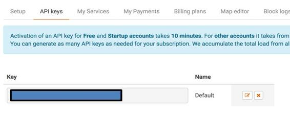

Setting up a Weather Service Account
In order to get the latest weather information, our microservice will invoke APIs from a third-party weather service, OpenWeatherMap (https://openweathermap.org). So, go to the URL and create a new, free account. Once you have created an account, go to your account settings and note down the API key from the following option:

This key will be used to authenticate our API calls to the OpenWeatherMap service.